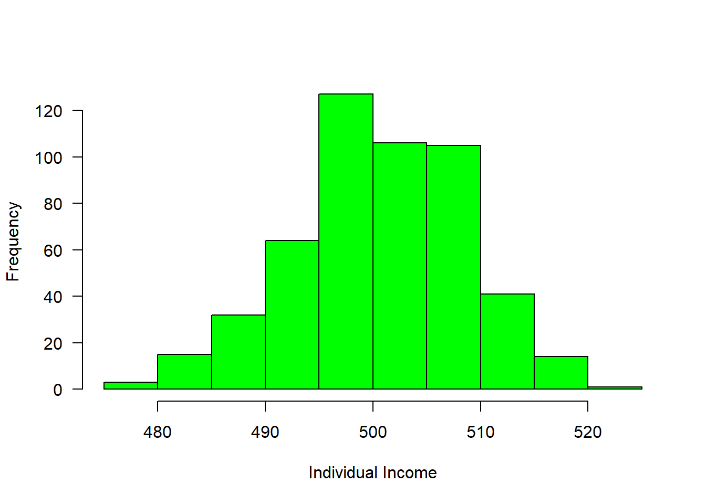

3 Data Structure in R
In chapter (intro?), we got a glimpse of data types and data collection techniques. In this chapter we focus on lower level data types that R handles. The chapter includes understanding storage of numeric type (integer vs. double), strings and dates. The series of data called vectors and tabular format of data storage called data frames. But before we move further, let’s us clean our working environment by clicking a combination of Ctrl+L. Clearing the workspace is always recommended before working on a new R project to avoid name conflicts with previous computations. We can also clear all figures using graphics.off() function. It is a good code practice that a new R project start with the code in the chunk below:
rm(list = ls())
graphics.off()3.1 Data Types
R language is a flexible language that allows people to work with different kind of data format (R-base?). This include integer, numeric, character, complex, dates and logical. The default data type or class in R is double precision—numeric. In a nutshell, R treats all kind of data into five categories but we deal with only four in this book. Before proceeding, we need to clear the workspace by typing rm(list = ls()) after the prompt in the in a console.
3.2 Vectors
Ofen times we want to store a set of numbers in once place. One way to do this is using the vectors in R. Vector is the most basic data structure in R. It is a sequence of elements of the same data type. if the elements are of different data types, they be coerced to a commontype that can accommodate all the elelements. Vector are generally created using the c() function widely called concatenate, though depending on the type vector being created, other method. Vectors store several numbers– a set of numbers in one container. let us look on the example below
id = c(1,2,3,4,5)
weight = c(158,659,782,659,759)
country = c("Somalia", "Kenya", "Tanzania", "Mozambique", "Madagascar")Notice that the c() function, which is short for concatenate wraps the list of numbers. The c() function combines all numbers together into one container. Notice also that all the individual numbers are separated with a comma. The comma is referred to an an item-delimiter. It allows R to hold each of the numbers separately. This is vital as without the item-delimiter, R will treat a vector as one big, un-seperated number.
3.2.1 Numeric Vector
The numeric class holds the set of real numbers — decimal place numbers. The numeric class is more general than the integer class, and inclused the integer numbers. We create a numeric vector using a c() function but you can use any function that creates a sequence of numbers. These could be any number (whole or decimal number). You can check if the data is integer with is.integer()
sst = c(25.4, 26, 28, 27.8, 29, 24.8, 22.3)
is.numeric(sst)[1] TRUE3.2.2 Integer vector
Unlike numeric, integer values do not have decimal places. They are commonly used for counting or indexing. Creating an integer vector is similar to numeric vector except that we need to instruct R to treat the data as integer and not numeric or double. To command R creating integer, we specify a suffix L to an element
depth = c(5L, 10L, 15L, 20L, 25L,30L)
is.vector(depth);class(depth)[1] TRUE[1] "integer"total.length = c(20,68,78,50)You can check if the data is integer with is.integer() and can convert numeric value to an integer with as.integer()
is.integer(total.length)[1] FALSEYou can query the class of the object with the class() to know the class of the object
class(total.length)[1] "numeric"Although the object bb is integer as confirmed with as.integer() function, the class() ouput the answer as numeric. This is because the defaul type of number in r is numeric. However, you can use the function as.integer() to convert numeric value to integer
class(as.integer(total.length))[1] "integer"3.2.3 Character vector
In programming terms, we usually call text as string. This often are text data like names. A character vector may contain a single character , a word or a group of words. The elements must be enclosed with a single or double quotations mark.
sites = c("Pemba Channel", "Zanzibar Channnel", "Pemba Channel")
is.vector(sites); class(sites)[1] TRUE[1] "character"We can be sure whether the object is a string with is.character() or check the class of the object with class().
countries = c("Kenya", "Uganda", "Rwanda", "Tanzania")
class(countries)[1] "character"3.2.4 Factor vector
These are strings from finite set of values. For example, we might wish to store a variable that records gender of people. You can check if the data is factor with is.factor() and use as.factor() to convert string to factor
sex = c("Male", "Female", "Male", "Male", "Female")
sex = as.factor(sex)
class(sex)[1] "factor"Often times we need to know the possible groups that are in the factor data. This can be achieved with the levels() function
levels(sex)[1] "Female" "Male" levels(countries)NULLOften we wish to take a continuous numerical vector and transform it into a factor. The function cut() takes a vector of numerical data and creates a factor based on your give cut-points. Let us make a fictional income of 508 people with rnorm() function.
income = rnorm(n = 508, mean = 500, sd = 8)
hist(income, col = "green", main = "", las = 1, xlab = "Individual Income")
#mosaic::plotDist(dist = "norm", mean = 500, sd = 80)We can now breaks the distribution into groups and make a simple plot as shown in figure @ref(fig:fig21), where those with income less than 400 were about 50, followed with a group with income range between 400 and 500 of about 200 and 250 people receive income above 500
group = cut(income, breaks = c(300,400,500,800),
labels = c("Below 400", "400-500", "Above 500"))
is.factor(group)[1] TRUElevels(group)[1] "Below 400" "400-500" "Above 500"barplot(table(group), las = 1, horiz = FALSE, col = c("blue", "red", "blue"), ylab = "Frequency", xlab = "Group of Income")data = data.frame(group, income)3.2.5 Logical Vector
A vector of logical values will either contain TRUE or FALSE or both. This is a special case of a factor that can only take on the values TRUE and FALSE. R is case-sensitive, therefore you must always capitalize TRUE and FALSE in function in R.
presence = c(TRUE,TRUE, FALSE, TRUE, FALSE)
is.vector(presence);class(presence)[1] TRUE[1] "logical"3.2.6 Date and Time
Date and time are also treated as vector in R
date.time = seq(lubridate::dmy(010121),
lubridate::dmy(250121),
length.out = 5)
date.time[1] "2021-01-01" "2021-01-07" "2021-01-13" "2021-01-19" "2021-01-25"3.2.7 Indexing the element
One advantage of vector is that you can extract individual element in the vector object by indexing, which is accomplished using the square bracket as illustrated below.
id[5]
people[5]
street[5]Apart from extracting single element, indexing allows to extract a range of element in a vector. This is extremely important because it allows to subset a portion of data in a vector. A colon operator is used to extract a range of data
street[2:4]3.2.8 Adding and Replacing an element in a vector
It is possible to add element of an axisting vecor. Here ia an example
id[6] = 6
people[6] = 578
street[6] = "Mwongozo"Sometimes you may need to replace an element from a vector, this can be achieved with indexing
people[1] = 7503.2.9 Number of elements in a vector
Sometimes you may have a long vector and want to know the numbers of elements in the object. R has length() function that allows you to query the vector and print the answer
length(people)3.2.10 Generating sequence of vectors Numbers
There are few R operators that are designed for creating vecor of non-random numbers. These functions provide multiple ways for generating sequences of numbers
The colon : operator, explicitly generate regular sequence of numbers between the lower and upper boundary numbers specified. For example, generating number beween 0 and 10, we simply write;
vector.seq = 0:10
vector.seq [1] 0 1 2 3 4 5 6 7 8 9 10However, if you want to generate a vector of sequence number with specified interval, let say we want to generate number between 0 and 10 with interval of 2, then the seq() function is used
regular.vector = seq(from = 0,to = 10, by = 2)
regular.vector[1] 0 2 4 6 8 10unlike the seq() function and : operator that works with numbers, the rep() function generate sequence of repeated numbers or strings to create a vector
id = rep(x = 3, each = 4)
station = rep(x = "Station1", each = 4)
id;station[1] 3 3 3 3[1] "Station1" "Station1" "Station1" "Station1"The rep() function allows to parse each and times arguments. The each argument allows creation of vector that that repeat each element in a vector according to specified number.
sampled.months = c("January", "March", "May")
rep(x = sampled.months, each = 3)[1] "January" "January" "January" "March" "March" "March" "May"
[8] "May" "May" But the times argument repeat the whole vector to specfied times
rep(x = sampled.months, times = 3)[1] "January" "March" "May" "January" "March" "May" "January"
[8] "March" "May" 3.2.11 Generating vector of normal distribution
The central limit theorem that ensure the data is normal distributed is well known to statistician. R has a rnorm() function which makes vector of normal distributed values. For example to generate a vector of 40 sea surface temperature values from a normal distribution with a mean of 25, and standard deviation of 1.58, we simply type this expression in console;
sst = rnorm(n = 40, mean = 25,sd = 1.58)
sst [1] 22.75100 24.41671 26.00755 25.33863 25.16470 24.32070 28.18046 26.03483
[9] 24.76365 24.98997 25.39244 24.16200 23.31959 25.34272 26.61571 24.28257
[17] 25.66001 25.84713 24.46182 25.67464 22.02579 26.39880 23.88149 26.83386
[25] 23.48608 24.87808 23.59649 23.75441 23.99079 22.86967 23.97580 28.06669
[33] 26.47467 24.41697 26.52632 26.04121 25.65270 24.37029 23.55323 28.575643.2.12 Rounding off numbers
There are many ways of rounding off numerical number to the nearest integers or specify the number of decimal places. the code block below illustrate the common way to round off:
require(magrittr)
chl = rnorm(n = 20, mean = .55, sd = .2)
chl %>% round(digits = 2) [1] 0.71 0.38 0.57 1.14 0.78 0.50 0.36 0.09 0.41 0.52 0.83 0.73 0.32 0.34 0.79
[16] 0.56 0.96 0.89 0.78 0.613.3 Data Frame
data.frame is very much like a simple Excel spreadsheet where each column represents a variable type and each row represent observations. A data frame is the most common way of storing data in R and, generally, is the data structure most often used for data analyses. A data frame is a list of equal–length vectors with rows as records and columns as variables. This makes data frames unique in data storing as it can store different classes of objects in each column (i.e. numeric, character, factor, logic, etc). In this section, we will create data frames and add attributes to data frames.
Perhaps the easiest way to create a data frame is to parse vectors in a data.frame() function. For instance, in this case we create a simple data frame dt and assess its internal structure
# create vectors
Name = c('Bob','Jeff','Mary')
Score = c(90, 75, 92)
Grade = c("A", "B", "A")
## use the vectors to make a data frame
dt = data.frame(Name, Score, Grade)
## assess the internal structure
str(dt)'data.frame': 3 obs. of 3 variables:
$ Name : chr "Bob" "Jeff" "Mary"
$ Score: num 90 75 92
$ Grade: chr "A" "B" "A"Note how Variable Name in dt was converted to a column of factors . This is because there is a default setting in data.frame() that converts character columns to factors . We can turn this off by setting the stringsAsFactors = FALSE argument:
## use the vectors to make a data frame
df = data.frame(Name, Score, Grade, stringsAsFactors = FALSE)
df %>% str()'data.frame': 3 obs. of 3 variables:
$ Name : chr "Bob" "Jeff" "Mary"
$ Score: num 90 75 92
$ Grade: chr "A" "B" "A"Now the variable Name is of character class in the data frame. The inherited problem of data frame to convert character columns into a factor is resolved by introduction f advanced data frames called tibble (Müller and Wickham 2018), which provides sticker checking and better formating than the traditional data.frame.
## use the vectors to make a tibble
tb = tibble(Name, Score, Grade)
## check the internal structure of the tibble
tb%>% glimpse()Rows: 3
Columns: 3
$ Name <chr> "Bob", "Jeff", "Mary"
$ Score <dbl> 90, 75, 92
$ Grade <chr> "A", "B", "A"Table @ref(tab:tab301) show the the data frame created by fusing the two vectors together.
| Name | Score | Grade |
|---|---|---|
| Bob | 90 | A |
| Jeff | 75 | B |
| Mary | 92 | A |
Because the columns have meaning and we have given them column names, it is desirable to want to access an element by the name of the column as opposed to the column number.In large Excel spreadsheets I often get annoyed trying to remember which column something was. The $sign and []are used in R to select variable from the data frame.
dt$Name[1] "Bob" "Jeff" "Mary"dt[,1][1] "Bob" "Jeff" "Mary"dt$Score[1] 90 75 92dt[,2][1] 90 75 92R has build in dataset that we can use for illustration. For example, (longley?) created a longley dataset, which is data frame with 7 economic variables observed every year from 1947 ti 1962 (Table @ref(tab:tab22)). We can add the data in the workspace with data() function
data(longley)
longley %>%
kableExtra::kable(caption = "Longleys' Economic dataset",
align = "c", row.names = F) %>%
kableExtra::column_spec(1:7, width = "3cm")| GNP.deflator | GNP | Unemployed | Armed.Forces | Population | Year | Employed |
|---|---|---|---|---|---|---|
| 83.0 | 234.289 | 235.6 | 159.0 | 107.608 | 1947 | 60.323 |
| 88.5 | 259.426 | 232.5 | 145.6 | 108.632 | 1948 | 61.122 |
| 88.2 | 258.054 | 368.2 | 161.6 | 109.773 | 1949 | 60.171 |
| 89.5 | 284.599 | 335.1 | 165.0 | 110.929 | 1950 | 61.187 |
| 96.2 | 328.975 | 209.9 | 309.9 | 112.075 | 1951 | 63.221 |
| 98.1 | 346.999 | 193.2 | 359.4 | 113.270 | 1952 | 63.639 |
| 99.0 | 365.385 | 187.0 | 354.7 | 115.094 | 1953 | 64.989 |
| 100.0 | 363.112 | 357.8 | 335.0 | 116.219 | 1954 | 63.761 |
| 101.2 | 397.469 | 290.4 | 304.8 | 117.388 | 1955 | 66.019 |
| 104.6 | 419.180 | 282.2 | 285.7 | 118.734 | 1956 | 67.857 |
| 108.4 | 442.769 | 293.6 | 279.8 | 120.445 | 1957 | 68.169 |
| 110.8 | 444.546 | 468.1 | 263.7 | 121.950 | 1958 | 66.513 |
| 112.6 | 482.704 | 381.3 | 255.2 | 123.366 | 1959 | 68.655 |
| 114.2 | 502.601 | 393.1 | 251.4 | 125.368 | 1960 | 69.564 |
| 115.7 | 518.173 | 480.6 | 257.2 | 127.852 | 1961 | 69.331 |
| 116.9 | 554.894 | 400.7 | 282.7 | 130.081 | 1962 | 70.551 |
Sometimes you may need to create set of values and store them in vectors, then combine the vectors into a data frame. Let us see how this can be done. First create three vectors. One contains id for ten individuals, the second vector hold the time each individual signed in the attendane book and the third vector is the distance of each individual from office. We can concatenate the set of values to make vectors.
id = c(1,2,3,4,5,6,7,8,9,10)
time = lubridate::ymd_hms(c("2018-11-20 06:35:25 EAT", "2018-11-20 06:52:05 EAT",
"2018-11-20 07:08:45 EAT", "2018-11-20 07:25:25 EAT",
"2018-11-20 07:42:05 EAT", "2018-11-20 07:58:45 EAT",
"2018-11-20 08:15:25 EAT", "2018-11-20 08:32:05 EAT",
"2018-11-20 08:48:45 EAT", "2018-11-20 09:05:25 EAT"), tz = "")
distance = c(20, 85, 45, 69, 42, 52, 6, 45, 36, 7)Once we have the vectors that have the same length dimension, we can use the function data.frame() to combine the the three vectors into one data frame shown in table @ref(tab:tab23)
arrival = data.frame(id, time, distance)| IDs | Time | Distance |
|---|---|---|
| 1 | 2018-11-20 06:35:25 | 20 |
| 2 | 2018-11-20 06:52:05 | 85 |
| 3 | 2018-11-20 07:08:45 | 45 |
| 4 | 2018-11-20 07:25:25 | 69 |
| 5 | 2018-11-20 07:42:05 | 42 |
| 6 | 2018-11-20 07:58:45 | 52 |
| 7 | 2018-11-20 08:15:25 | 6 |
| 8 | 2018-11-20 08:32:05 | 45 |
| 9 | 2018-11-20 08:48:45 | 36 |
| 10 | 2018-11-20 09:05:25 | 7 |
3.4 Matrix
A matrix is defined as a collection of data elements arranged in a two–dimensional rectangular layout. R is very strictly when you make up a matrix as it must be with equal dimension—all columns in a matrix must be of the same length. Unlike data frame and list that can store numeric or character.etc in columns, matrix columns must be numeric or characters in a matrix file.
3.4.1 Creating Matrices
The base R has a matrix() function that construct matrices column–wise. In other language, element in matrix are entered starting from the upper left corner and running down the columns. Therefore, one should take serious note of specifying the value to fill in a matrix and the number of rows and columns when using the matrix() function.For example in the code block below, we create an imaginary month sst value for five years and obtain an atomic vector of 60 observation.
sst = rnorm(n = 60, mean = 25, 3)Once we have the atomic vector of sst value, we can convert it to matrix with the matrix() function. We put the observation as rows—months and the columns as years. Therefore, we have 12 rows and 5 years and the product of number of months and years we get 60—equivalent to our sst atomic vector we just created above.
sst.matrix = matrix(data = sst, nrow = 12, ncol = 5)We then check whether we got the matrix with is.matrix() function
is.matrix(sst);is.matrix(sst.matrix)[1] FALSE[1] TRUEsst [1] 27.15887 29.82623 21.79276 23.03818 26.46099 26.35133 27.68915 28.28227
[9] 27.23224 26.90193 20.22910 22.22293 21.89737 22.93103 22.80765 28.51462
[17] 27.26408 28.01374 21.12954 23.59263 22.41776 22.50477 25.65007 20.82344
[25] 30.38484 24.73602 25.89366 22.99834 25.26279 24.44449 24.87016 26.51820
[33] 21.29120 21.78010 25.96962 20.26237 28.65121 26.98996 22.80030 25.78540
[41] 28.93907 27.99160 21.30092 22.67348 24.51096 22.31008 24.76499 18.99109
[49] 27.08304 25.84099 21.40937 21.69412 24.66916 22.52998 26.75459 29.25414
[57] 22.50861 28.12796 27.25008 28.92810We can check whether the dimension we just defined while creating this matrix is correct. This is done with the dim() function from base R.
dim(sst.matrix)[1] 12 5If you have large vector and you you want the matrix() function to figure out the number of columns, you simply define the nrow and tell the function that you do not want those element arranged by rows —i.e you want them in column-wise. That is done by parsing the argument byrow = FALSE inside the matrixt() function.
sst.matrixby = sst %>% matrix(nrow = 12, byrow = FALSE)3.4.2 Adding attributes to Matrices
Often times you may need to add additional attributes to the maxtrix—observation names, variable names and comments in the matrix.
We can add columns, which are years from 2014 to 2018
years = 2014:2018
colnames(sst.matrix) = years
sst.matrix 2014 2015 2016 2017 2018
[1,] 27.15887 21.89737 30.38484 28.65121 27.08304
[2,] 29.82623 22.93103 24.73602 26.98996 25.84099
[3,] 21.79276 22.80765 25.89366 22.80030 21.40937
[4,] 23.03818 28.51462 22.99834 25.78540 21.69412
[5,] 26.46099 27.26408 25.26279 28.93907 24.66916
[6,] 26.35133 28.01374 24.44449 27.99160 22.52998
[7,] 27.68915 21.12954 24.87016 21.30092 26.75459
[8,] 28.28227 23.59263 26.51820 22.67348 29.25414
[9,] 27.23224 22.41776 21.29120 24.51096 22.50861
[10,] 26.90193 22.50477 21.78010 22.31008 28.12796
[11,] 20.22910 25.65007 25.96962 24.76499 27.25008
[12,] 22.22293 20.82344 20.26237 18.99109 28.92810and add the month for rows, which is January to December. Now the matrix has names for the rows—records and for columns—variables
months = seq(from = lubridate::dmy(010115), to = lubridate::dmy(311215),
by = "month") %>% lubridate::month(abbr = TRUE,
label = TRUE)
rownames(sst.matrix) = months
sst.matrix 2014 2015 2016 2017 2018
Jan 27.15887 21.89737 30.38484 28.65121 27.08304
Feb 29.82623 22.93103 24.73602 26.98996 25.84099
Mar 21.79276 22.80765 25.89366 22.80030 21.40937
Apr 23.03818 28.51462 22.99834 25.78540 21.69412
May 26.46099 27.26408 25.26279 28.93907 24.66916
Jun 26.35133 28.01374 24.44449 27.99160 22.52998
Jul 27.68915 21.12954 24.87016 21.30092 26.75459
Aug 28.28227 23.59263 26.51820 22.67348 29.25414
Sep 27.23224 22.41776 21.29120 24.51096 22.50861
Oct 26.90193 22.50477 21.78010 22.31008 28.12796
Nov 20.22910 25.65007 25.96962 24.76499 27.25008
Dec 22.22293 20.82344 20.26237 18.99109 28.928103.5 Arrays
array(data = sst, dim = c(3,5,4)), , 1
[,1] [,2] [,3] [,4] [,5]
[1,] 27.15887 23.03818 27.68915 26.90193 21.89737
[2,] 29.82623 26.46099 28.28227 20.22910 22.93103
[3,] 21.79276 26.35133 27.23224 22.22293 22.80765
, , 2
[,1] [,2] [,3] [,4] [,5]
[1,] 28.51462 21.12954 22.50477 30.38484 22.99834
[2,] 27.26408 23.59263 25.65007 24.73602 25.26279
[3,] 28.01374 22.41776 20.82344 25.89366 24.44449
, , 3
[,1] [,2] [,3] [,4] [,5]
[1,] 24.87016 21.78010 28.65121 25.78540 21.30092
[2,] 26.51820 25.96962 26.98996 28.93907 22.67348
[3,] 21.29120 20.26237 22.80030 27.99160 24.51096
, , 4
[,1] [,2] [,3] [,4] [,5]
[1,] 22.31008 27.08304 21.69412 26.75459 28.12796
[2,] 24.76499 25.84099 24.66916 29.25414 27.25008
[3,] 18.99109 21.40937 22.52998 22.50861 28.92810This can be done with the indexing. For example, in the sst.matrix we just create, it has twelve rows representing monthly average and five columns representing years. We then obtain data for the six year and we want to add it into the matrix. Simply done with indexing
sst.matrix[1:12,5] Jan Feb Mar Apr May Jun Jul Aug
27.08304 25.84099 21.40937 21.69412 24.66916 22.52998 26.75459 29.25414
Sep Oct Nov Dec
22.50861 28.12796 27.25008 28.92810 3.6 Dealing with Misiing Values
Just as we can assign numbers, strings, list to a variable, we can also assign nothing to an object, or an empty value to a variable. IN R, an empty object is defined with NULL. Assigning a value oof NULL to an object is one way to reset it to its original, empty state. You might do this when you wanto to pre–allocate an object without any value, especially when you iterate the process and you want the outputs to be stored in the empty object.
sst.container = NULLYou can check whether the object is an empty with the is.null() function, which return a logical ouputs indicating whther is TRUE or FALSE
is.null(sst.container)[1] TRUEYou can also check for NULL in an if satement as well, as highlighted in the following example;
if (is.null(sst.container)){
print("The object is empty and hence you can use to store looped outputs!!!")
}[1] "The object is empty and hence you can use to store looped outputs!!!"And empty element (value) in object is represented with NA in R, and it is the absence of value in an object or variable.
sst.sample = c(26.78, 25.98,NA, 24.58, NA)
sst.sample[1] 26.78 25.98 NA 24.58 NATo identify missing values in a vector in R, use the is.na() function, which returns a logical vector with TRUE of the corresponding element(s) with missing value
is.na(sst.sample)[1] FALSE FALSE TRUE FALSE TRUEand computing statistics of the variable with NA always will give out the NA ouputs
mean(sst.sample); sd(sst.sample);range(sst.sample)[1] NA[1] NA[1] NA NAHowever, we can exclude missing value in these mathematical operations by parsing , na.rm = TRUE argument
mean(sst.sample, na.rm = TRUE);sd(sst.sample, na.rm = TRUE);range(sst.sample, na.rm = TRUE)[1] 25.78[1] 1.113553[1] 24.58 26.78you can also exclude the element with NA value using the `na.omit()
sst.sample %>% na.omit()[1] 26.78 25.98 24.58
attr(,"na.action")
[1] 3 5
attr(,"class")
[1] "omit"Finally is a NaN, which is closely related to NA, which is used to assign non-floating numbers. For example when we have the anomaly of sea surface temperature and we are interested to use sqrt() function to reduce the variability of the dataset.
sst.anomaly = c(2.3,1.25,.8,.31,0,-.21)
sqrt(sst.anomaly)Warning in sqrt(sst.anomaly): NaNs produced[1] 1.5165751 1.1180340 0.8944272 0.5567764 0.0000000 NaNWe notice that the sqrt of -0.21 gives us a NaN elements.